포클랜드 전쟁 잡담 - 레이더 사냥
게시: 2022-01-20T06:30:00+09:00
<바보야, 문제는 레이더야> 영국공군이 Vulcan 폭격기와 9대의 Victor 급유기를 동원하여 감행한 포클랜드 섬의 Port Stanley 활주로 폭격이 의미가 있는 작전이었는지에 대해서는 왈가왈부 말이 많음. 혹자는 공군의 무리한 욕심이 빚은 전략적 낭비였다고 하고, 일부에서는 덕분에 아르헨 공군이 Mirage 등의 제공기를 부에노스 아이레스 방위로 돌려 영국해군의 부담을 줄여주었다고 평가. 그러나 애초에 포트 스탠리의 활주로는 너무 좁고 짧아 Mirage나 Super Etendard 등 주력 전투기는 어차피 사용할 수 없었음. 그리고 어차피 포트 스탠리 공항은 영국 항모의 해리어들은 물론, 영국 구축함들이 밤마다 접근하여 4.5인치 함포로 공격을 해댔기 때문에 거기에 주력 전투기를 배치하는 것은 자살 행위. 나중에서야 영국 해군 및 공군이 주목한 공격 대상은 바로 AN/TPS-43F 3D 방공 레이더 (사진1). 이 레이더가 해리어들의 비행 패턴을 감시하여 (비록 수평선 너머에 있는 영국 항모들의 정확한 위치는 알 수 없었지만) 대충 어느 위치에 영국 항모들이 있을 거라는 정보를 아르헨 공군에게 계속 제공했음. 뿐만 아니라 영국 구축함들을 위협하는 지상발사 Exocet 미사일 발사대를 제거하기 위해 해리어들이 뜨면 그걸 재빨리 포착하여 엑조세 팀에게 알려주었기 때문에 도통 엑조세 발사대를 포착할 수가 없었음. 그래서 저 눈엣가시 같은 TPS-43 레이더를 제거하고 싶었으나, 걔들도 이동식이라 당최 폭격으로 제거하기가 매우 힘듬. 그러나 미국 공군에게는 답이 있었음. 당시만 해도 레이더 전파를 따라가는 레이더 호밍 미사일(anti-radiation missile)이 흔치 않았고, 미국이 월남전 때 최초로 개발하여 북베트남의 방공망 제압에 사용하던 AGM-45 Shrike (사진2) 미사일 뿐. (AGM-88 HARM은 1985년에 도입됨.) 그러나 가난한 영국 공군에게는 그런 최첨단 무기는 그림의 떡. 영국과 프랑스가 공동개발한 Martel (사진3)이 있긴 했고 이걸 써볼까 생각했으나 이건 원래 레이더 호밍 겸 TV 카메라 유도에 의한 대함 미사일 겸용으로 개발된 물건이라 너무 크고 무거워 벌컨의 속도를 크게 떨어뜨리는데다, 이륙하기 전에 적이 어떤 주파수를 쓰는지 미리 맞춰놓아야 하는 등 쓸 수 있는 물건이 아니었음. 그런데 애초에 Vulcan이 이륙했던 적도 아센시온 섬의 공군기지는 미군 기지였고, 거기서 미군이 산타클로스처럼 몰래 Shrike 미사일을 영국군 벌컨 앞에 놓고감. 이건 절대 대외비였음.
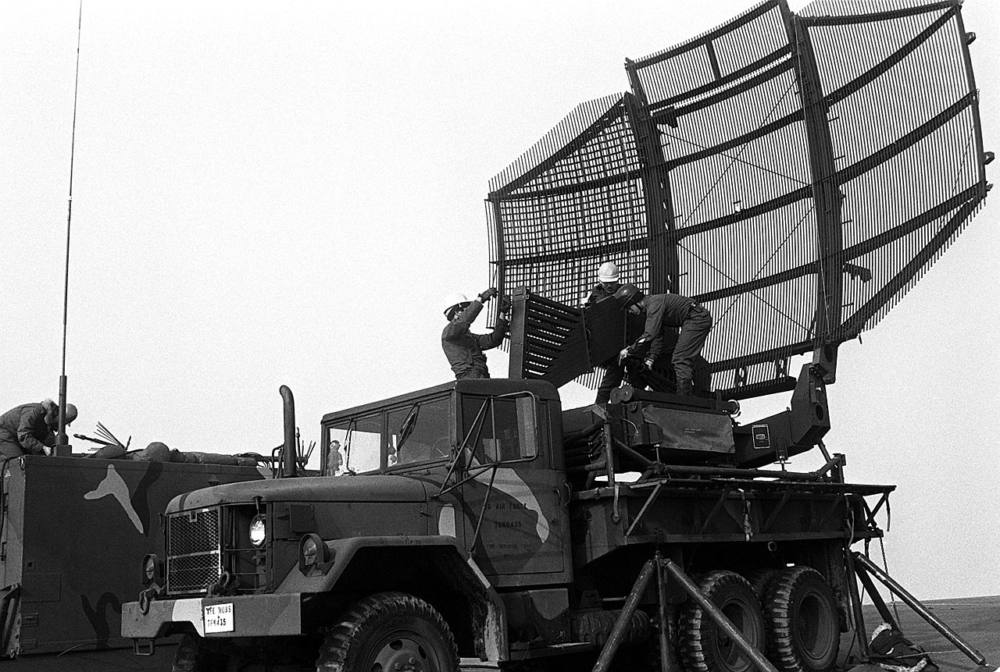
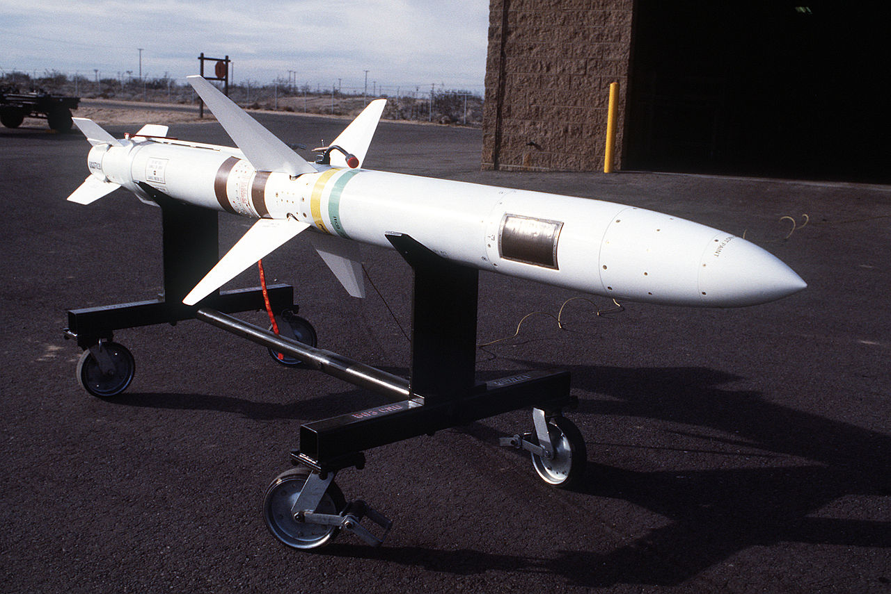
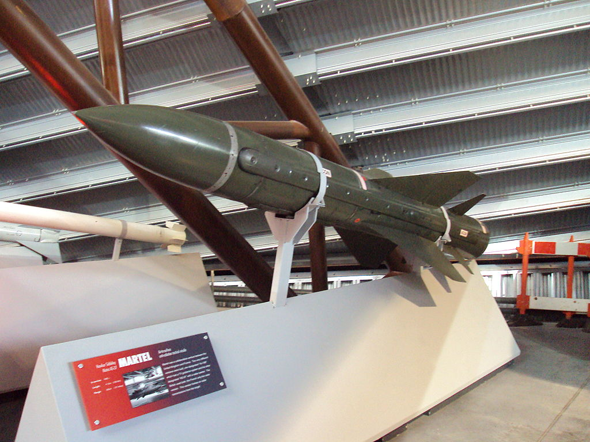
<불태운 것은 투지와 항공유 뿐> Shrike 레이더 호밍 미사일을 장착한 Vulcan 폭격기로 포클랜드 Port Stanley의 아르헨티나 공군의 AN/TPS-43F 3D 방공 레이더를 제거하자는 계획이 Operation Black Buck 5. 미공군이 몰래 제공한 Shrike 미사일은 당연히 원래 Vulcan에 장착된 적이 없었으나, 영국 공군은 이 미사일을 Vulcan 날개 밑의 급조된 파일런에 통합 장착하고 모의 발사 훈련하는 것을 딱 10일만에 완료. 이건 당연히 미공군의 밀접한 기술 지원 없이는 불가능했던 일. 파일런 하나에 2발씩, 좌우 양날개에 4발을 장착할 수 있었는데, 덕분에 내부 폭탄창에는 7.3톤짜리 임시 연료탱크를 달 수 있었으므로 그만큼 공중급유기 Victor로부터의 재급유 횟수가 줄어들어서 개이득. 그런데 Shrike 미사일이 목표물을 찾으려면 TPS-43 레이더가 계속 강력한 전파를 쏘아주어야 함. 그래서 일부러 포클랜드 인근 영국 항모전단에게 5월 31일 아침에 Sea Harrier들을 보내 인근을 폭격하도록 협조 요청. 그런데 그 시간이 잘 안 맞았던 듯. 벌컨이 현장에 도착해보니 아르헨티나군은 레이더를 모두 꺼둔 상태. 가뜩이나 연료가 부족한 벌컨이 포클랜드 주변을 1시간 동안이나 뱅뱅 돈 뒤에야 아르헨티나군이 레이더를 켬. 즉각 2발의 미사일을 발사. 그러나 미제 미사일이라고 딱히 백발백중은 아니었는지 1발은 완전히 빗나가버리고 나머지 1발이 레이더 인근 10m 지점을 강타. Shrike는 원래 AIM-7 Sparrow 공대공 미사일을 개조해 만든 것으로서 탄두는 67kg 정도로 별로 위력적이지 않았음. 이 공격을 받은 레이더는 일부 피해를 입었으나 36시간 뒤 다시 동작을 개시하여 이 작전에도 엄청난 양의 항공유를 불태운 영국 공군을 머쓱하게 만듬. 사진1은 Shrike 미사일을 장착하기 위해 서둘러 만들어진 벌컨 날개 밑의 파일런. 사진2,3은 Shrike 미사일을 장착한 모습. 사진4은 이 모든 돈 낭비의 범인인 아센시온 섬의 벌컨과 빅터들.
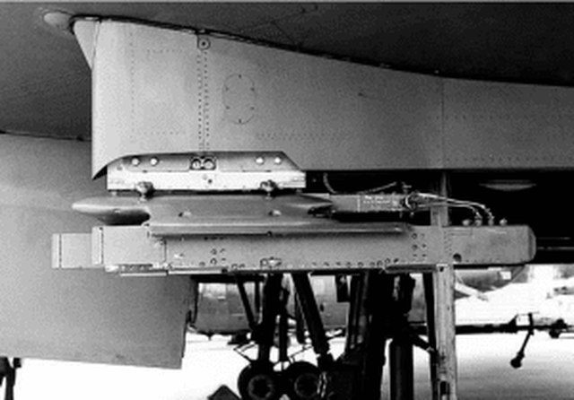
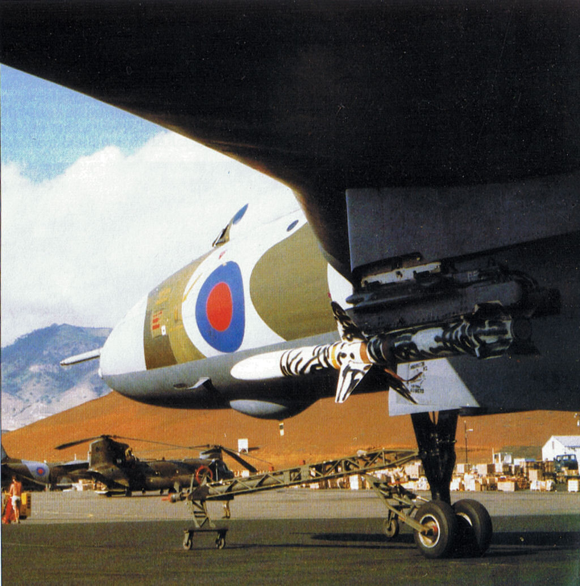
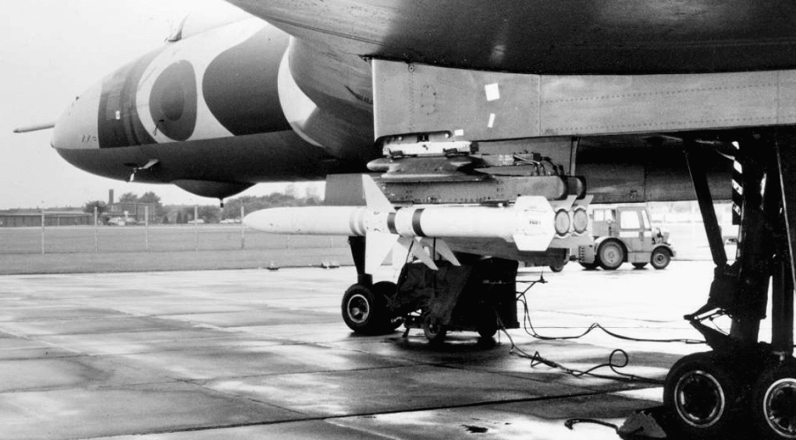
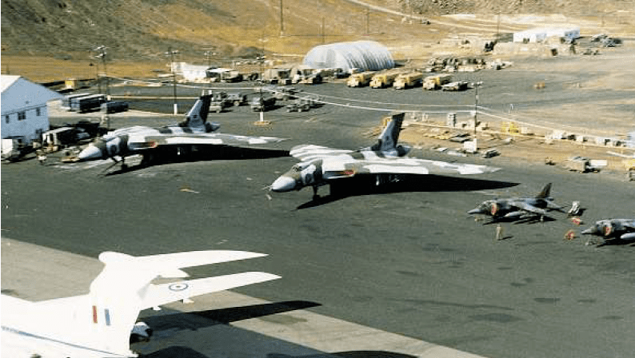
<리오 데 자네이로 상공의 Vulcan> Shrike 미사일을 이용한 레이더 사냥이 실패한 뒤 며칠 뒤, 이번에는 기필코라면서 Shrike 4발을 달고 다시 먼 길을 날아온 벌컨. 그러나 이제 영국군이 레이더 호밍 미사일로 TPS-43 레이더를 노리고 있다는 것을 알게 된 아르헨티나군도 바보가 아니었으므로 TPS-43 레이더를 아예 꺼놓음. '어 이러면 완전 나가린데'라며 하염없이 40분간 뱅뱅 선회. 그러다 결국 꿩대신 닭이라고 TPS-43은 아니지만 35mm 오리콘 대공포 조준에 사용되던 Skyguard 레이더에 2발을 발사. 그 중 하나가 Skyguard 레이더를 강타했고 레이더 요원 4명도 함께 전사. 그런데, 나름의 성공이라고 스스로를 위로하며 돌아가던 벌컨의 고난은 이제부터 시작. 돌아가는 길에 급유를 받다가 공중 급유용 probe가 부러짐. 꼼짝없이 연료 부족으로 해상 추락하게 된 벌컨은 아센시온으로의 귀환을 포기하고 브라질 리오 데 자네이로 공항으로 날아가서 브라질 공군 F-5E의 감시 하에 착륙. 착륙 전에 모든 기밀 서류와 함께 남은 2발의 Shrike 미사일도 바다에 투척했는데, 마가 끼었는지 그 중 1발이 파일런에 걸려서 투척이 안됨. 이로 인해 미국이 영국에게 Shrike 미사일을 공급하고 있었다는 사실이 드러나 미국도 난처해짐. 영국과 미국은 브라질에게 입을 다물고 그냥 벌컨 및 그 승무원들을 돌려달라고 애걸복걸. 결국 브라질은 부품을 못구해 애를 먹던 브라질 Lynx 헬기의 부품을 공급받는 조건으로 벌컨에 재급유 해주고 이륙 허가. 그리고 압수된 Shrike 미사일은 브라질이 꿀꺽. 사진1은 Shrike에게 파괴된 것과 동일한 Skyguard 레이더. 사진2은 그때 브라질 F-5E의 HUD에 걸린 벌컨 사진3은 Shrike를 발사하는 늠름한 모습의 벌컨 그림.
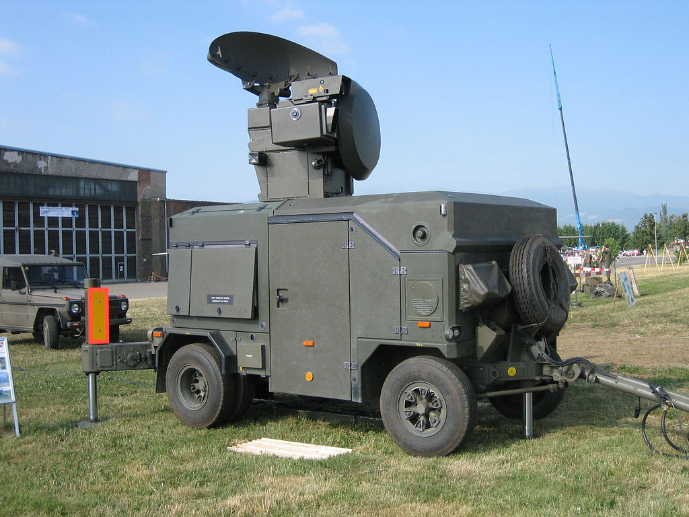
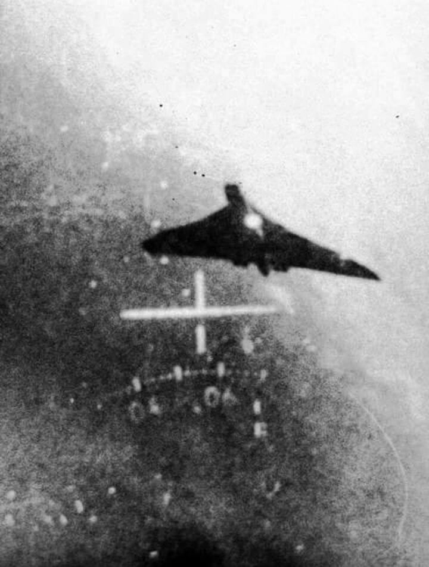
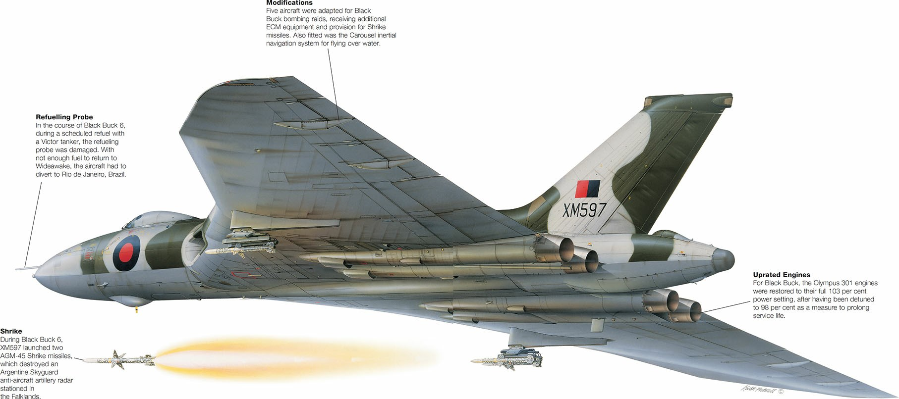
<그토록 원하던 TPS-43 레이더의 최후> 영국 공군이 그토록 부수려고 노력하던 TPS-43 레이더는 종전시까지 멀쩡하게 운용. 그러나 결국 영국 육군이 포트 스탠리를 점령할 때 이 TPS-43 레이더도 영국군 손에 노획됨. 영국군은 이걸 또 기어코 뜯어가서 스코틀랜드 동해안의 공군기지 부컨(Buchan)에 설치해서 1994년까지 운용. 알고보면 정말 가난한 나라 영국. ** 아래 사진3 속의 TPS-43은 아르헨티나에서 뜯어와 부컨에 설치된 그 실물은 아님.
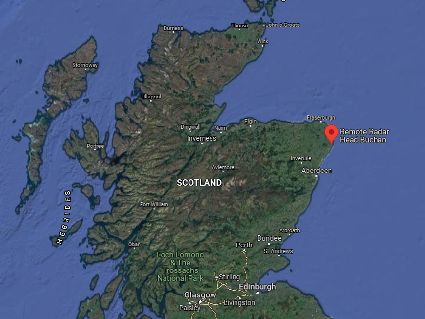
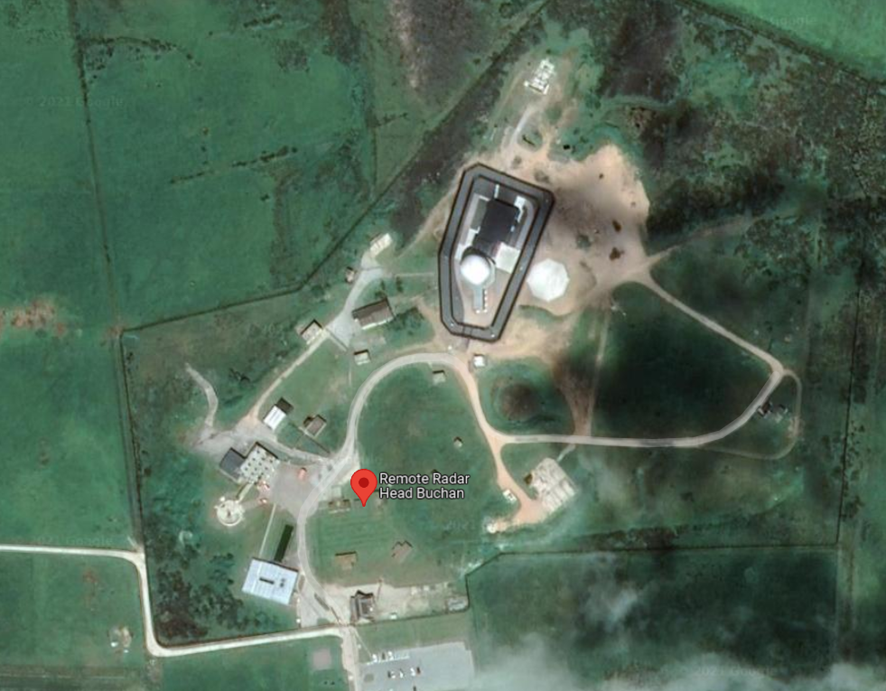
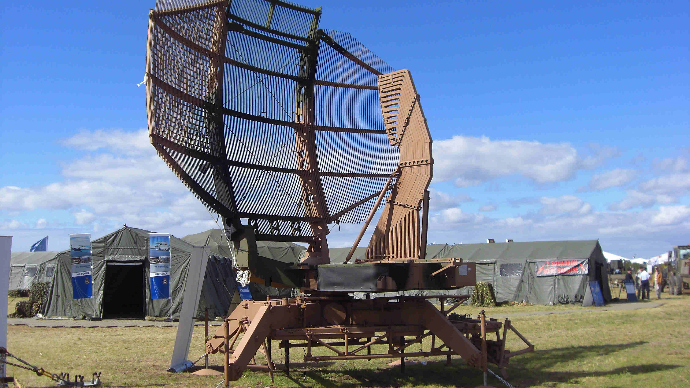